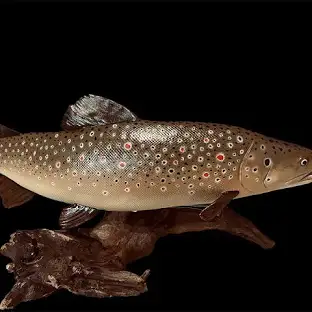
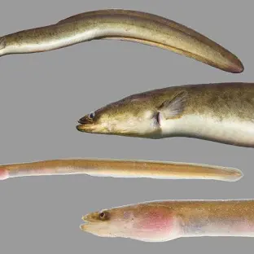
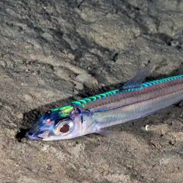
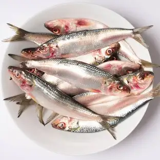

peces
¿Que son los peces?
Los peces son vertebrados acuáticos de sangre fría. Muchas de sus estructuras son adaptaciones para su estilo de vida acuática. Por ejemplo, poseen un cuerpo aerodinámico que reduce la resistencia al agua mientras nadan
caracteristicas
Peces son animales vertebrados acuáticos, generalmente ectotérmicos (su temperatura depende de la del ambiente), recubiertos en su mayoría por escamas y dotados de aletas, que permiten su desplazamiento en el medio acuático, y branquias, con las que captan el oxígeno disuelto en el agua.
clasificacion
ejemplos
salmón, El salmón (Salmo salar) de la familia de los salmónidos, es un habitante de aguas frías
- 
Aguja de mar, La aguja es la especie Belone belone, un pez marino de la familia belónidos

anguila
La anguila de agua dulce, especialmente la japonesa, se conoce como Unagi
- 
peón
Es una especie relativamente común en la plataforma continental y en la parte superior del talud continental, probablemente los juveniles viven en la parte más profunda.1
- 
sardina,es un pequeño pez que habita tanto en casi todos los litorales está cubierto por escamas a excepción de la cabeza; su dorso es oscuro mientras que a los lados presenta colores plateados
- 
inicio